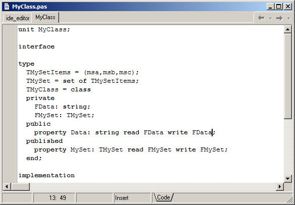
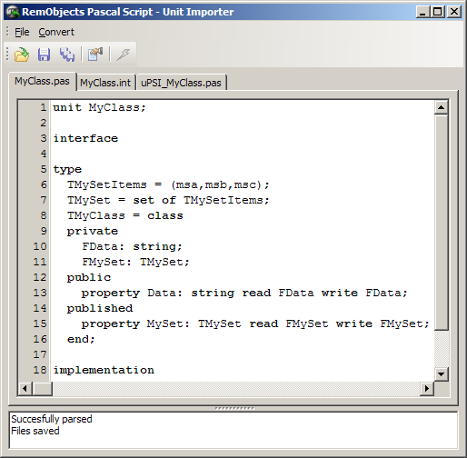
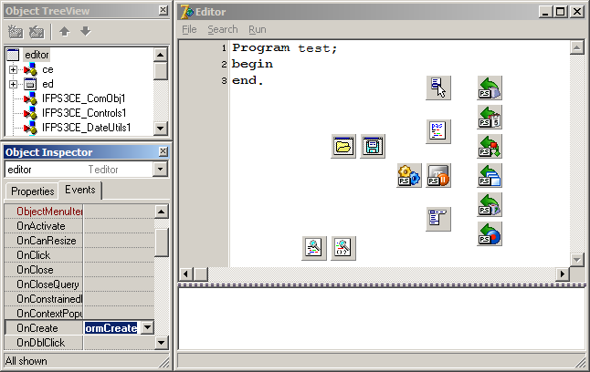
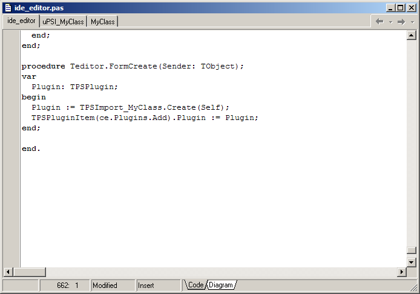
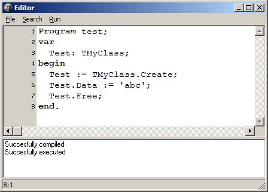
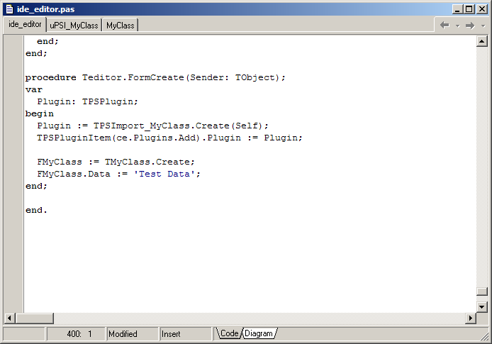
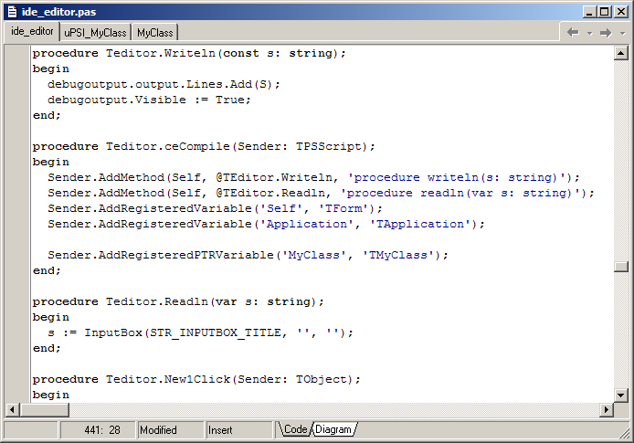
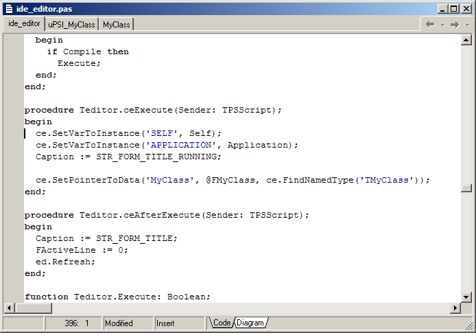
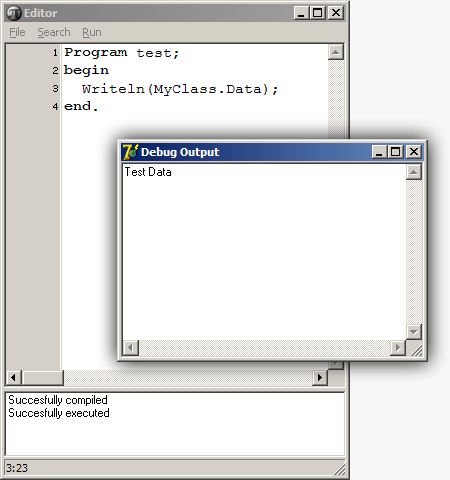

This article explains how to use existing classes in RemObjects Pascal Script by using a copy of the \Samples\Debug project. The following class has been added to that project:

The MyClass file is then opened in the Unit Import tool, which generates units for us:

Press the"Go" button and add the generated uPSI_MyClass.pas to your project. Now select the main form and create a handler for its OnCreate:

In the Create event, we instantiate a TPSImport_MyClass (i.e. the class generated by the import tool) and add it to the script engine's plugin list:

When you are going to use this plugin class from multiple projects, you can also install it in a package so that it gets installed in the Component Palette.
Now it's possible to use the class from the script engine:

Using an existing TMyClass in the script engine
It's also possible to use existing TMyClass variables from the script engine. To do this, you add a FMyClass: TMyClass to your form class and create it:

In the script engine's OnCompile Event you need to let the engine know that there is a new variable. There are two ways to do this: AddRegisteredVariable and AddRegisteredPtrVariable. The difference is that AddRegisteredPtrVariable will make changes directly to the variable, so if you free the FMyClass and re-create it, the script engine will use the new variable. AddRegisteredPTRVariable has two parameters. A name and a type. Add this code to the script engine's OnCompile event:

Now the compiler knows about the variable, but the runtime part of the script engine doesn't know where the variable is yet. To let the runtime know, you can use the OnExecute event. The SetPointerToData method can set the value of a script engine variable added with AddRegisteredPTRVariable. The first parameter is the variable name, the second is the address of the variable that contains the instance and the last parameter contains the required type info for the variable (generally you use ce.FindNamedType('nameoftype') here).

The final result is:
